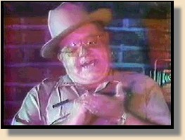
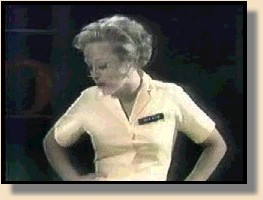

Couldn't have said it better. C. W. McCall is the greatest natural born storyteller of our time. If you were old enough to know what a radio was in 1976, then you know the song that most people associate with him ...Convoy. While he had fun with Convoy, and the other truckin' songs, it was the songs about Colorado ...and about nature ...and about life, that were most important to him. The fame and fortune never changed who he really was, and what he loved most ...his family and his mountains.
Billy Dale Fries was born on November 15th, 1928, in Audubon Iowa. Yup... Billy Dale. He later changed it to William Dale, and went by William D. Fries. Bill's parents were musicians, who played for silent movies. As a child he showed musical talent, playing the clarinet, and singing, but was more interested in art and graphics design. In high school he was the drum major of the marching band. During his time at the University of Iowa, Bill continued to study music, and played in the concert band, but his main interest was still art, and he eventually changed his major to commercial artwork. After graduation, he was employed by an Omaha, Nebraska TV station, doing their artwork. By the time he had worked there five years, he had his own show, drawing caricatures of celebrities. Anybody out there got tapes, or better yet the drawings?
In early '60s, Bill went to work for an Omaha advertising agency as their art director. It was also at this time, in 1961, that Bill first visited Ouray, and fell in love with the San Juan Mountains of Colorado.
Bill created C. W. McCall while working for the Bozell Jacobs advertising agency in Omaha. By 1968, Bill's musical talents had surfaced again. He had combined writing, music, and art to win numerous awards for various advertising campaigns, and was made the creative director for the agency. One of Bozell & Jacobs clients at the time was the Metz Baking Company, of Sioux City, Iowa. They asked B&J to create a new kind of ad campaign for their Old Home Bread. Bill set to work, not having any idea where this assignment would lead.
The ads featured the CB jaw-jackin', smokey teasin' trucker, and his girlfriend Mavis Davis, a waitress down at the Old Home Fill'er-up an' Keep On-a-Truckin' Café. Bill couldn't find anyone to do the voice of C.W. McCall to his satisfaction, so he did it himself. People loved the ads so much, they would call up the TV and radio stations to request them, like you would a favorite song. The local TV schedules listed when the ads would run. The advertising industry liked them too, giving Bill the prestigious Clio award, not once, but twice. In 1974 Bill received the Clio for the Best Television or Cinema Overall Advertising Campaign, and in 1976 got his second Clio for the Best Television or Cinema Advertising for Packaged Foods. Check out the Clio's website, www.clioawards.com, and go to the archives section to check out all the particulars for yourself. If anybody has tapes of these ads, please, Please, PLEASE share them with us.
Ed Floden over on the WWW's other CW site found a couple RealVideo clips from an Omaha TV station's Saturday latenight monster movie show, featuring the Sherrif, and none other than Mavis Davis. You'll need RealPlayer G2 to watch 'em.
|

In this episode, Doctor San Guinary gets busted by the Sherrif, (Fairweather Lewis?) on account of his questionable medical schoolin'.
|
|

This pic doesn't do Mavis justice. As C.W. said, "This gal's built like a burlap bag full o' bobcats, she's got it too-gether... reminds ya of a couple a Cub Scouts tryin' to set up a Sears Roebuck pup tent!"
|
The success of Bill's trucker dittys had not gone unnoticed in the music industry either. MGM asked C. W. McCall and the Old Home Band to cut a single. In 1974 Old Home Fill'er-Up an' Keep On-a- Truckin Café made Billboard charts, and MGM wanted more. Suddenly the mild mannered ad executive was becoming a music star.
In 1975, Bill and band cut the album, Wolf Creek Pass. It included the Old Home Café, and nine other songs, three of which were about Colorado. Black Bear Road followed in 1976, with Convoy hitting number 1 on every chart known to man. Bill toured on the fairgound circuit with the Old Home Band, now callin' themselves "The Fort Calhoun Nuclear Power Plant Boys."
Now, we need to talk about the band too, because they are a pretty interesting story in their own right. In the early '70s, a guy by the name of Louis F. (Chip) Davis Jr. was working at the same ad agency as Bill. He wrote jingles. Well he was involved in the Old Home Bread ads with Bill, and assembled the Old Home Band ...Ron Cooley, Jackson Berkey, Eric Hansen, and a host of others. Check out the liner notes to the albums for a complete listing. At the same time he was working with Bill on C. W. McCall, Chip was also working on the album that eventually became Fresh Aire, by Mannheim Steamroller. Yeah, you guessed it, Mannheim Steamroller, The Old Home Band, and The Fort Calhoun Nuclear Power Plant Boys, are all pretty much one and the same.
I've seen it written somewhere that Chip went off after C. W. McCall, changed his musical style, and, put together the Mannheim Steamroller. Well the dates prove otherwise, and as for that stuff about changing their style, Fresh Aire II only needs Bill to write some words to be a C. W. McCall album. Heck, there's even a cut that's a musical first cousin of Convoy. My guess is that even if Convoy and the other radio hits are all you ever heard, you'll probably make the connection. But if you are a true C. W. McCall fan(atic), you'll pick it up immediately. Check out Traditions of Christmas from A Fresh Aire Christmas, and then listen to Sing Silent Night. The connection is unmistakable.
Meanwhile, back on the superslab ...
Ever since 1961, Bill had been planning an eventual escape to Ouray. Thanks to his success with Convoy, he and his family were able to create the San Juan Odyssey, which opened in Ouray in 1977.
The next album to follow Black Bear Road was entitled Wilderness, and the fourth album, Rubber Duck was released the same year. C. W. was a hot attraction on the fairground concert circuit, but the mountains were calling...
The last two albums, Roses For Mama, and C. W. McCall & Co. contained a significant amount of material not written by Bill and Chip. The pressures of touring, and trying to crank out albums for the masses, that would make money for the record company, were taking their toll. After releasing C. W. McCall & Co., Bill decided to hang up the music career, and he and family moved to Ouray.
Now essentially retired, Bill was free to enjoy the mountains he loved so much, and he and his family could concentrate on their new project. The ever evolving visual tapestry of San Juan Odyssey.
Bill was elected mayor in 1986 , and held office until 1992. I still remember a newspaper article that said C. W. McCall had been elected mayor of a small town in Colorado. The most visible legacy of his time as Mayor is the restoration of the Walsh Library. While many people worked on and contributed to the restoration, Bill was the lightning rod that brought it all together, and kept it moving
In 1990, Bill reunited with Chip and the guys to redo some of those old tunes on CD. This wasn't an attempt at a comeback so much as a gesture to loyal fans. Once the cat was out of the bag about who Mannheim Steamroller really was, there must have been an avalanche of mail begging for a reunion. The result was The Real McCall - An American Storyteller. It didn't make the charts, but to the steadfast fans it was truly a breath of fresh air(e). American Gramaphone put it back in their 1999 catalog due to "popular demand."
In 1992, Bill retired from hosting the Odyssey. From then until it's closing at the end of the 1996 season, it was run mostly by his children, sons Mark and Bill Jr., and their families.
Bill Fries and the character he created have left an indelible mark on tens of thousands of people. His songs from the heart, his beautiful tribute to the San Juan Mountains, and his warm personality have endeared him to fans the world over. Now that the Odyssey has passed into time and memory, like the gold and silver camps of old, and C. W. isn't roaming the interstates any longer, Bill can spend his days doing what he loves most... roaming the mountains in that muddy CJ, and chasing those trout.
|